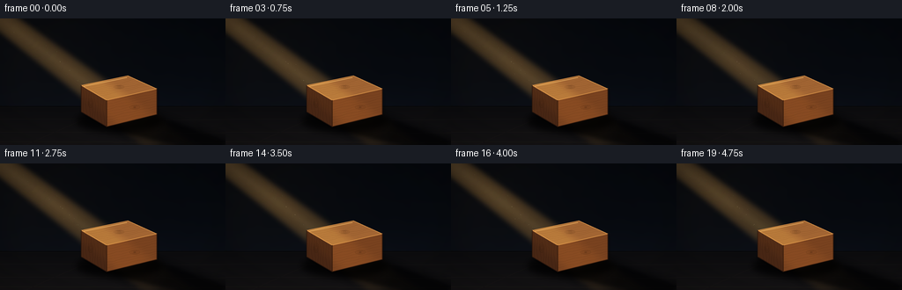
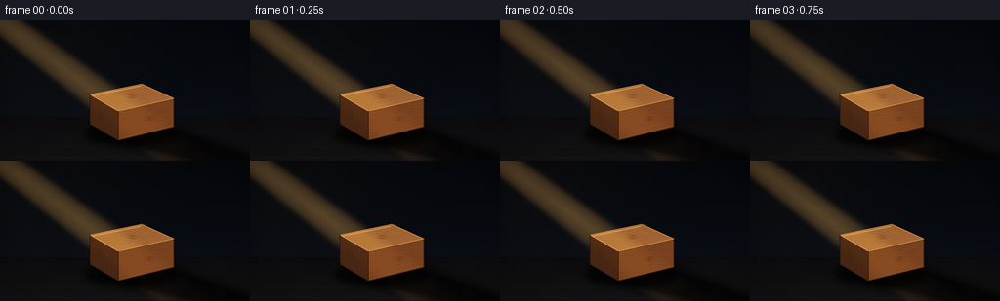

CODING AGENTS AS PIXEL WORLD MODELS
traex/GPT-5.6-Sol · phygen_041
点击播放 · 原生 RGB 像素
逐轮保存的候选
回放视频、检查图与代码变化。
每份候选均可单独播放。实际图片检查记录在下方工具轨迹中。
候选 01播放与检查图
点击播放 · 原生 RGB 像素


展开代码变化
--- 上一保存版本
+++ 本次保存版本
@@ -0,0 +1,316 @@
+from pathlib import Path
+import math
+import numpy as np
+from PIL import Image, ImageDraw, ImageFilter, ImageChops
+import artifact_io
+
+# PixelWorld case: procedural, deterministic, supersampled rendering.
+W, H, N, FPS = 256, 144, 20, 4
+S = 4
+WW, HH = W * S, H * S
+ROOT = Path(__file__).resolve().parent
+rng = np.random.default_rng(41041)
+
+
+def sp(points):
+ return [(int(round(x*S)), int(round(y*S))) for x, y in points]
+
+
+def mask_polygon(points, blur=0):
+ m = Image.new("L", (WW, HH), 0)
+ ImageDraw.Draw(m).polygon(sp(points), fill=255)
+ if blur:
+ m = m.filter(ImageFilter.GaussianBlur(blur*S))
+ return m
+
+
+def rgba_layer(color, alpha):
+ im = Image.new("RGBA", (WW, HH), tuple(color) + (0,))
+ if isinstance(alpha, Image.Image):
+ im.putalpha(alpha)
+ else:
+ im.putalpha(int(alpha))
+ return im
+
+
+def clipped_drawing(poly, draw_fn, opacity=255):
+ layer = Image.new("RGBA", (WW, HH), (0, 0, 0, 0))
+ d = ImageDraw.Draw(layer)
+ draw_fn(d)
+ pm = mask_polygon(poly)
+ a = layer.getchannel("A")
+ a = ImageChops.multiply(a, pm)
+ if opacity != 255:
+ a = a.point(lambda v: v * opacity // 255)
+ layer.putalpha(a)
+ return layer
+
+
+# Stable low-frequency surface variation.
+noise_small = rng.normal(0, 1, (36, 64)).astype(np.float32)
+noise_im = Image.fromarray(np.uint8(np.clip(noise_small * 22 + 128, 0, 255))).resize(
+ (WW, HH), Image.Resampling.BICUBIC
+).filter(ImageFilter.GaussianBlur(3*S))
+noise = (np.asarray(noise_im, dtype=np.float32) - 128.0) / 128.0
+
+# Reusable native coordinate fields at supersampled resolution.
+yy, xx = np.mgrid[0:HH, 0:WW].astype(np.float32)
+x = xx / S
+y = yy / S
+
+# Diagonal light coordinates: upper-left -> lower-right.
+p0x, p0y = -13.0, -10.0
+dx, dy = 0.799, 0.602
+along = (x-p0x)*dx + (y-p0y)*dy
+perp = -(x-p0x)*dy + (y-p0y)*dx
+beam_halfwidth = 12.5 + np.clip(along, 0, 250) * 0.025
+beam_profile = np.exp(-((np.abs(perp) / beam_halfwidth) ** 5.0))
+beam_profile *= np.clip((along + 18) / 35, 0, 1)
+beam_profile *= np.clip((270 - along) / 70, 0.30, 1)
+
+# Geometric wooden cuboid.
+top_poly = [(92, 76), (145, 65), (178, 80), (121, 93)]
+left_poly = [(92, 76), (121, 93), (121, 123), (92, 106)]
+front_poly = [(121, 93), (178, 80), (178, 109), (121, 123)]
+all_poly = [(92, 76), (145, 65), (178, 80), (178, 109), (121, 123), (92, 106)]
+top_mask = mask_polygon(top_poly)
+left_mask = mask_polygon(left_poly)
+front_mask = mask_polygon(front_poly)
+all_mask = mask_polygon(all_poly)
+
+# Deterministic dust particles, distributed inside the visible shaft before impact.
+dust = []
+for _ in range(48):
+ a = rng.uniform(25, 178)
+ q = rng.normal(0, 0.37)
+ width = 9.5 + a * 0.026
+ px = p0x + dx*a - dy*q*width
+ py = p0y + dy*a + dx*q*width
+ size = rng.choice([0.22, 0.28, 0.35, 0.45, 0.65], p=[.21, .27, .27, .18, .07])
+ phase = rng.uniform(0, math.tau)
+ speed = rng.uniform(0.25, 1.0)
+ dust.append((px, py, size, phase, speed, a))
+
+
+def base_scene(frame):
+ # Deep blue-black wall with a warmer pool around the beam and horizon.
+ t = frame / N
+ vertical = np.clip(y / H, 0, 1)
+ wall_glow = np.exp(-(((x-31)/105)**2 + ((y-24)/87)**2))
+ horizon_glow = np.exp(-((y-101)/24)**2) * np.exp(-((x-139)/145)**2)
+ base = np.empty((HH, WW, 3), np.float32)
+ base[..., 0] = 5.5 + 4.3*vertical + 5.6*wall_glow + 2.0*horizon_glow
+ base[..., 1] = 8.2 + 5.2*vertical + 3.7*wall_glow + 2.6*horizon_glow
+ base[..., 2] = 12.8 + 7.0*vertical + 1.4*wall_glow + 4.0*horizon_glow
+ base += noise[..., None] * 1.7
+
+ # Matte floor starts at the horizon. It remains dark, but receives the shaft.
+ floor = y >= 99.5
+ fg = np.clip((y-99.5) / 44.5, 0, 1)
+ base[..., 0] = np.where(floor, 12.0 + 8.5*fg + noise*2.0, base[..., 0])
+ base[..., 1] = np.where(floor, 12.0 + 7.0*fg + noise*1.7, base[..., 1])
+ base[..., 2] = np.where(floor, 14.0 + 6.2*fg + noise*1.5, base[..., 2])
+ return Image.fromarray(np.uint8(np.clip(base, 0, 255)), "RGB").convert("RGBA")
+
+
+def add_environment_details(scene):
+ # Horizon seam and restrained perspective floor marks.
+ line = Image.new("RGBA", (WW, HH), (0, 0, 0, 0))
+ d = ImageDraw.Draw(line)
+ d.line(sp([(0, 100), (256, 100)]), fill=(3, 5, 7, 125), width=S)
+ d.line(sp([(0, 101), (256, 101)]), fill=(45, 37, 25, 16), width=S)
+ for y0, a in [(114, 13), (129, 16), (140, 20)]:
+ d.line(sp([(0, y0), (256, y0+1.0)]), fill=(100, 76, 48, a), width=1*S)
+ for xb in [29, 220]:
+ d.line(sp([(128, 100), (xb, 144)]), fill=(85, 69, 49, 11), width=S)
+ return Image.alpha_composite(scene, line)
+
+
+def add_beam(scene, frame):
+ # Slightly breathing visible volumetric light, broad feathered edge plus hot core.
+ pulse = 1.0 + 0.025*math.sin(frame*0.51) + 0.012*math.sin(frame*1.17+0.6)
+ turbulent = 1 + 0.045*np.sin(along*0.060 + frame*0.17) * np.exp(-(perp/17)**2)
+ alpha = np.clip(beam_profile * turbulent * 67 * pulse, 0, 86).astype(np.uint8)
+ beam_a = Image.fromarray(alpha, "L").filter(ImageFilter.GaussianBlur(0.6*S))
+ scene = Image.alpha_composite(scene, rgba_layer((242, 173, 83), beam_a))
+
+ core = np.exp(-((perp/5.2)**2)) * np.clip((along+8)/45, 0, 1)
+ core *= np.clip((225-along)/65, 0.15, 1)
+ core_a = Image.fromarray(np.uint8(np.clip(core*18*pulse, 0, 22)), "L").filter(
+ ImageFilter.GaussianBlur(1.8*S)
+ )
+ scene = Image.alpha_composite(scene, rgba_layer((255, 219, 143), core_a))
+ return scene
+
+
+def add_dust(scene, frame):
+ layer = Image.new("RGBA", (WW, HH), (0, 0, 0, 0))
+ d = ImageDraw.Draw(layer)
+ time = frame / FPS
+ for px, py, r, phase, speed, a in dust:
+ # Slow buoyant drift, with a tiny component along the shaft.
+ ox = 0.35*math.sin(phase + time*speed) + time*0.13*dx
+ oy = 0.55*math.cos(phase*0.7 + time*speed*0.65) - time*0.10
+ twinkle = 0.52 + 0.48*math.sin(phase + frame*0.42)**2
+ aa = int((45 + 85*(a/178)) * twinkle)
+ rr = r*S
+ cx, cy = (px+ox)*S, (py+oy)*S
+ d.ellipse((cx-rr, cy-rr, cx+rr, cy+rr), fill=(255, 222, 159, aa))
+ if r >= .45:
+ d.line((cx-dx*rr*2, cy-dy*rr*2, cx+dx*rr, cy+dy*rr),
+ fill=(255, 229, 172, aa//3), width=max(1, int(rr*.65)))
+ glow = layer.filter(ImageFilter.GaussianBlur(0.35*S))
+ return Image.alpha_composite(scene, glow)
+
+
+def add_cast_shadow(scene, frame):
+ # Blocked light projects in the same direction as the incident ray, across bottom.
+ sway = 0.35*math.sin(frame*0.23)
+ penumbra_poly = [
+ (91, 102), (120, 123), (177, 107),
+ (262, 137+sway), (263, 151), (208, 149), (149, 136), (102, 118)
+ ]
+ pm = mask_polygon(penumbra_poly, blur=4.2)
+ pm = pm.point(lambda v: int(v*0.50))
+ scene = Image.alpha_composite(scene, rgba_layer((0, 1, 3), pm))
+ umbra_poly = [
+ (110, 112), (123, 124), (176, 110),
+ (258, 140+sway), (244, 148), (202, 144), (149, 132), (118, 121)
+ ]
+ um = mask_polygon(umbra_poly, blur=1.65)
+ um = um.point(lambda v: int(v*0.46))
+ scene = Image.alpha_composite(scene, rgba_layer((0, 0, 1), um))
+
+ # Compact contact shadow anchors the block to the floor.
+ contact = Image.new("L", (WW, HH), 0)
+ cd = ImageDraw.Draw(contact)
+ cd.ellipse((86*S, 103*S, 184*S, 130*S), fill=170)
+ contact = contact.filter(ImageFilter.GaussianBlur(3.4*S))
+ return Image.alpha_composite(scene, rgba_layer((0, 0, 0), contact))
+
+
+def face_layer(poly, color):
+ layer = Image.new("RGBA", (WW, HH), (0, 0, 0, 0))
+ ImageDraw.Draw(layer).polygon(sp(poly), fill=tuple(color)+(255,))
+ return layer
+
+
+def add_block(scene, frame):
+ # Very subtle object halo/shadow, then three faces in painter's order.
+ silhouette = all_mask.filter(ImageFilter.GaussianBlur(2.0*S))
+ shifted = Image.new("L", (WW, HH), 0)
+ shifted.paste(silhouette, (1*S, 2*S))
+ shifted = shifted.point(lambda v: int(v*.34))
+ scene = Image.alpha_composite(scene, rgba_layer((0, 0, 0), shifted))
+
+ # Shadowed left end grain.
+ scene = Image.alpha_composite(scene, face_layer(left_poly, (72, 39, 21)))
+ # Front longitudinal face.
+ scene = Image.alpha_composite(scene, face_layer(front_poly, (121, 67, 32)))
+ # Bright top face directly receiving the diagonal ray.
+ scene = Image.alpha_composite(scene, face_layer(top_poly, (160, 103, 52)))
+
+ # Fine wood grain: irregular parallel fibers, clipped independently per face.
+ def left_grain(d):
+ for i in range(9):
+ x0 = (94.5 + i*3.2)*S
+ pts=[]
+ for y0 in np.linspace(73, 125, 18):
+ xp = x0 + S*(0.7*math.sin(y0*.23+i*.9) + 0.035*(y0-91))
+ pts.append((xp, y0*S))
+ d.line(pts, fill=(38, 18, 9, 62), width=max(1,S//2))
+ for rr in [1.3, 2.2, 3.2]:
+ d.ellipse(((103-rr)*S, (96-rr*1.7)*S, (103+rr)*S, (96+rr*1.7)*S),
+ outline=(39, 19, 9, 80), width=max(1,S//2))
+ scene = Image.alpha_composite(scene, clipped_drawing(left_poly, left_grain))
+
+ def front_grain(d):
+ for i in range(12):
+ ybase = 85.5 + i*3.0
+ pts=[]
+ for x0 in np.linspace(117, 182, 26):
+ yp = ybase - .225*(x0-121) + .42*math.sin(x0*.31+i*1.27)
+ pts.append((x0*S, yp*S))
+ col=(62, 29, 12, 50 if i%3 else 72)
+ d.line(pts, fill=col, width=max(1,S//2))
+ # A recognizable knot and growth rings.
+ for rr in [1.1, 2.0, 3.1, 4.3]:
+ d.ellipse(((153-rr*1.35)*S, (101-rr*.62)*S,
+ (153+rr*1.35)*S, (101+rr*.62)*S),
+ outline=(59, 27, 11, 76), width=max(1,S//2))
+ d.ellipse((151.7*S,100.3*S,154.2*S,101.8*S), fill=(54,24,10,95))
+ scene = Image.alpha_composite(scene, clipped_drawing(front_poly, front_grain))
+
+ def top_grain(d):
+ for i in range(12):
+ ybase = 70.0 + i*2.0
+ pts=[]
+ for x0 in np.linspace(88, 182, 32):
+ yp = ybase - .205*(x0-93) + .40*math.sin(x0*.25+i*.83)
+ pts.append((x0*S, yp*S))
+ d.line(pts, fill=(83, 42, 17, 53 if i%3 else 78), width=max(1,S//2))
+ for rr in [1.0, 1.8, 2.8, 3.9]:
+ d.ellipse(((135-rr*1.5)*S, (78-rr*.56)*S,
+ (135+rr*1.5)*S, (78+rr*.56)*S),
+ outline=(84, 43, 18, 75), width=max(1,S//2))
+ scene = Image.alpha_composite(scene, clipped_drawing(top_poly, top_grain))
+
+ # The actual shaft creates a localized golden stripe on the wood, clipped to faces.
+ beam8 = np.uint8(np.clip(beam_profile*56*(1+.02*math.sin(frame*.51)), 0, 62))
+ beam_img = Image.fromarray(beam8, "L")
+ top_light = ImageChops.multiply(beam_img, top_mask)
+ front_light = ImageChops.multiply(beam_img.point(lambda v: int(v*.52)), front_mask)
+ left_light = ImageChops.multiply(beam_img.point(lambda v: int(v*.32)), left_mask)
+ scene = Image.alpha_composite(scene, rgba_layer((255, 193, 91), top_light))
+ scene = Image.alpha_composite(scene, rgba_layer((240, 143, 55), front_light))
+ scene = Image.alpha_composite(scene, rgba_layer((222, 122, 44), left_light))
+
+ # Crisp bevels and selective warm rim highlights clarify the cuboid silhouette.
+ edge = Image.new("RGBA", (WW, HH), (0,0,0,0))
+ d = ImageDraw.Draw(edge)
+ d.line(sp([(92,76),(145,65),(178,80),(121,93),(92,76)]),
+ fill=(238,169,86,150), width=max(2,S))
+ d.line(sp([(121,93),(121,123),(178,109),(178,80)]),
+ fill=(45,22,10,185), width=max(2,S))
+ d.line(sp([(92,76),(92,106),(121,123)]),
+ fill=(39,20,12,160), width=max(2,S))
+ d.line(sp([(95,77),(144,67)]), fill=(255,203,118,150), width=max(2,S))
+ scene = Image.alpha_composite(scene, edge)
+ return scene
+
+
+def finish(scene):
+ arr = np.asarray(scene.convert("RGB"), dtype=np.float32)
+ # Cinematic vignette, preserving the beam entrance while deepening corners.
+ nx = (x-W*.5)/(W*.72)
+ ny = (y-H*.51)/(H*.80)
+ vig = np.clip(1.0 - .30*np.maximum(nx*nx + ny*ny - .20, 0), .66, 1.0)
+ arr *= vig[...,None]
+ # Mild contrast and warm highlight rolloff.
+ arr = np.where(arr < 120, arr*.99, 120 + (arr-120)*1.05)
+ hi = np.clip((arr[...,0]-80)/150, 0, 1)
+ arr[...,0] += hi*1.6
+ arr[...,2] -= hi*0.8
+ out = Image.fromarray(np.uint8(np.clip(arr,0,255)), "RGB")
+ return np.asarray(out.resize((W,H), Image.Resampling.LANCZOS), dtype=np.uint8)
+
+
+def render(frame):
+ scene = base_scene(frame)
+ scene = add_environment_details(scene)
+ scene = add_beam(scene, frame)
+ scene = add_dust(scene, frame)
+ scene = add_cast_shadow(scene, frame)
+ scene = add_block(scene, frame)
+ return finish(scene)
+
+
+def main():
+ frames = np.stack([render(i) for i in range(N)], axis=0)
+ assert frames.shape == (20, 144, 256, 3)
+ assert frames.dtype == np.uint8
+ artifact_io.save(frames, ROOT)
+
+
+if __name__ == "__main__":
+ main()
可观测工具轨迹
实际执行的命令与返回图片。
命令 1exit 0
/bin/bash -lc "cat prompt.txt && printf '\\n--- GENERATION_RULES.md ---\\n' && cat GENERATION_RULES.md"
命令 2exit 0
/bin/bash -lc "cat task_spec.json && printf '\\n--- FILES ---\\n' && find . -maxdepth 2 -type f -printf '%p\\n' | sort"
命令 3exit 0
/bin/bash -lc "command -v ffmpeg || true; command -v blender || true; python3 - <<'PY' mods=['PIL','numpy','cv2','imageio','matplotlib'] for m in mods: try: x=__import__(m); print(m, getattr(x,'__version__','ok')) except Exception as e: print(m, 'MISSING', e) PY"
命令 4exit 0
/bin/bash -lc 'cat artifact_io.py'
命令 5exit 0
/bin/bash -lc "cat > generate.py <<'PY'
from pathlib import Path
import math
import numpy as np
from PIL import Image, ImageDraw, ImageFilter, ImageChops
import artifact_io
# PixelWorld case: procedural, deterministic, supersampled rendering.
W, H, N, FPS = 256, 144, 20, 4
S = 4
WW, HH = W * S, H * S
ROOT = Path(__file__).resolve().parent
rng = np.random.default_rng(41041)
def sp(points):
return [(int(round(x*S)), int(round(y*S))) for x, y in points]
def mask_polygon(points, blur=0):
m = Image.new(\"L\", (WW, HH), 0)
ImageDraw.Draw(m).polygon(sp(points), fill=255)
if blur:
m = m.filter(ImageFilter.GaussianBlur(blur*S))
return m
def rgba_layer(color, alpha):
im = Image.new(\"RGBA\", (WW, HH), tuple(color) + (0,))
if isinstance(alpha, Image.Image):
im.putalpha(alpha)
else:
im.putalpha(int(alpha))
return im
def clipped_drawing(poly, draw_fn, opacity=255):
layer = Image.new(\"RGBA\", (WW, HH), (0, 0, 0, 0))
d = ImageDraw.Draw(layer)
draw_fn(d)
pm = mask_polygon(poly)
a = layer.getchannel(\"A\")
a = ImageChops.multiply(a, pm)
if opacity "'!= 255:
a = a.point(lambda v: v * opacity // 255)
layer.putalpha(a)
return layer
# Stable low-frequency surface variation.
noise_small = rng.normal(0, 1, (36, 64)).astype(np.float32)
noise_im = Image.fromarray(np.uint8(np.clip(noise_small * 22 + 128, 0, 255))).resize(
(WW, HH), Image.Resampling.BICUBIC
).filter(ImageFilter.GaussianBlur(3*S))
noise = (np.asarray(noise_im, dtype=np.float32) - 128.0) / 128.0
# Reusable native coordinate fields at supersampled resolution.
yy, xx = np.mgrid[0:HH, 0:WW].astype(np.float32)
x = xx / S
y = yy / S
# Diagonal light coordinates: upper-left -> lower-right.
p0x, p0y = -13.0, -10.0
dx, dy = 0.799, 0.602
along = (x-p0x)*dx + (y-p0y)*dy
perp = -(x-p0x)*dy + (y-p0y)*dx
beam_halfwidth = 12.5 + np.clip(along, 0, 250) * 0.025
beam_profile = np.exp(-((np.abs(perp) / beam_halfwidth) ** 5.0))
beam_profile *= np.clip((along + 18) / 35, 0, 1)
beam_profile *= np.clip((270 - along) / 70, 0.30, 1)
# Geometric wooden cuboid.
top_poly = [(92, 76), (145, 65), (178, 80), (121, 93)]
left_poly = [(92, 76), (121, 93), (121, 123), (92, 106)]
front_poly = [(121, 93), (178, 80), (178, 109), (121, 123)]
all_poly = [(92, 76), (145, 65), (178, 80), (178, 109), (121, 123), (92, 106)]
top_mask = mask_polygon(top_poly)
left_mask = mask_polygon(left_poly)
front_mask = mask_polygon(front_poly)
all_mask = mask_polygon(all_poly)
# Deterministic dust particles, distributed inside the visible shaft before impact.
dust = []
for _ in range(48):
a = rng.uniform(25, 178)
q = rng.normal(0, 0.37)
width = 9.5 + a * 0.026
px = p0x + dx*a - dy*q*width
py = p0y + dy*a + dx*q*width
size = rng.choice([0.22, 0.28, 0.35, 0.45, 0.65], p=[.21, .27, .27, .18, .07])
phase = rng.uniform(0, math.tau)
speed = rng.uniform(0.25, 1.0)
dust.append((px, py, size, phase, speed, a))
def base_scene(frame):
# Deep blue-black wall with a warmer pool around the beam and horizon.
t = frame / N
vertical = np.clip(y / H, 0, 1)
wall_glow = np.exp(-(((x-31)/105)**2 + ((y-24)/87)**2))
horizon_glow = np.exp(-((y-101)/24)**2) * np.exp(-((x-139)/145)**2)
base = np.empty((HH, WW, 3), np.float32)
base[..., 0] = 5.5 + 4.3*vertical + 5.6*wall_glow + 2.0*horizon_glow
base[..., 1] = 8.2 + 5.2*vertical + 3.7*wall_glow + 2.6*horizon_glow
base[..., 2] = 12.8 + 7.0*vertical + 1.4*wall_glow + 4.0*horizon_glow
base += noise[..., None] * 1.7
# Matte floor starts at the horizon. It remains dark, but receives the shaft.
floor = y >= 99.5
fg = np.clip((y-99.5) / 44.5, 0, 1)
base[..., 0] = np.where(floor, 12.0 + 8.5*fg + noise*2.0, base[..., 0])
base[..., 1] = np.where(floor, 12.0 + 7.0*fg + noise*1.7, base[..., 1])
base[..., 2] = np.where(floor, 14.0 + 6.2*fg + noise*1.5, base[..., 2])
return Image.fromarray(np.uint8(np.clip(base, 0, 255)), "RGB").convert("RGBA")
def add_environment_details(scene):
# Horizon seam and restrained perspective floor marks.
line = Image.new("RGBA", (WW, HH), (0, 0, 0, 0))
d = ImageDraw.Draw(line)
d.line(sp([(0, 100), (256, 100)]), fill=(3, 5, 7, 125), width=S)
d.line(sp([(0, 101), (256, 101)]), fill=(45, 37, 25, 16), width=S)
for y0, a in [(114, 13), (129, 16), (140, 20)]:
d.line(sp([(0, y0), (256, y0+1.0)]), fill=(100, 76, 48, a), width=1*S)
for xb in [29, 220]:
d.line(sp([(128, 100), (xb, 144)]), fill=(85, 69, 49, 11), width=S)
return Image.alpha_composite(scene, line)
def add_beam(scene, frame):
# Slightly breathing visible volumetric light, broad feathered edge plus hot core.
pulse = 1.0 + 0.025*math.sin(frame*0.51) + 0.012*math.sin(frame*1.17+0.6)
turbulent = 1 + 0.045*np.sin(along*0.060 + frame*0.17) * np.exp(-(perp/17)**2)
alpha = np.clip(beam_profile * turbulent * 67 * pulse, 0, 86).astype(np.uint8)
beam_a = Image.fromarray(alpha, "L").filter(ImageFilter.GaussianBlur(0.6*S))
scene = Image.alpha_composite(scene, rgba_layer((242, 173, 83), beam_a))
core = np.exp(-((perp/5.2)**2)) * np.clip((along+8)/45, 0, 1)
core *= np.clip((225-along)/65, 0.15, 1)
core_a = Image.fromarray(np.uint8(np.clip(core*18*pulse, 0, 22)), "L").filter(
ImageFilter.GaussianBlur(1.8*S)
)
scene = Image.alpha_composite(scene, rgba_layer((255, 219, 143), core_a))
return scene
def add_dust(scene, frame):
layer = Image.new("RGBA", (WW, HH), (0, 0, 0, 0))
d = ImageDraw.Draw(layer)
time = frame / FPS
for px, py, r, phase, speed, a in dust:
# Slow buoyant drift, with a tiny component along the shaft.
ox = 0.35*math.sin(phase + time*speed) + time*0.13*dx
oy = 0.55*math.cos(phase*0.7 + time*speed*0.65) - time*0.10
twinkle = 0.52 + 0.48*math.sin(phase + frame*0.42)**2
aa = int((45 + 85*(a/178)) * twinkle)
rr = r*S
cx, cy = (px+ox)*S, (py+oy)*S
d.ellipse((cx-rr, cy-rr, cx+rr, cy+rr), fill=(255, 222, 159, aa))
if r >= .45:
d.line((cx-dx*rr*2, cy-dy*rr*2, cx+dx*rr, cy+dy*rr),
fill=(255, 229, 172, aa//3), width=max(1, int(rr*.65)))
glow = layer.filter(ImageFilter.GaussianBlur(0.35*S))
return Image.alpha_composite(scene, glow)
def add_cast_shadow(scene, frame):
# Blocked light projects in the same direction as the incident ray, across bottom.
sway = 0.35*math.sin(frame*0.23)
penumbra_poly = [
(91, 102), (120, 123), (177, 107),
(262, 137+sway), (263, 151), (208, 149), (149, 136), (102, 118)
]
pm = mask_polygon(penumbra_poly, blur=4.2)
pm = pm.point(lambda v: int(v*0.50))
scene = Image.alpha_composite(scene, rgba_layer((0, 1, 3), pm))
umbra_poly = [
(110, 112), (123, 124), (176, 110),
(258, 140+sway), (244, 148), (202, 144), (149, 132), (118, 121)
]
um = mask_polygon(umbra_poly, blur=1.65)
um = um.point(lambda v: int(v*0.46))
scene = Image.alpha_composite(scene, rgba_layer((0, 0, 1), um))
# Compact contact shadow anchors the block to the floor.
contact = Image.new("L", (WW, HH), 0)
cd = ImageDraw.Draw(contact)
cd.ellipse((86*S, 103*S, 184*S, 130*S), fill=170)
contact = contact.filter(ImageFilter.GaussianBlur(3.4*S))
return Image.alpha_composite(scene, rgba_layer((0, 0, 0), contact))
def face_layer(poly, color):
layer = Image.new("RGBA", (WW, HH), (0, 0, 0, 0))
ImageDraw.Draw(layer).polygon(sp(poly), fill=tuple(color)+(255,))
return layer
def add_block(scene, frame):
# Very subtle object halo/shadow, then three faces in painter'"'s order.
silhouette = all_mask.filter(ImageFilter.GaussianBlur(2.0*S))
shifted = Image.new(\"L\", (WW, HH), 0)
shifted.paste(silhouette, (1*S, 2*S))
shifted = shifted.point(lambda v: int(v*.34))
scene = Image.alpha_composite(scene, rgba_layer((0, 0, 0), shifted))
# Shadowed left end grain.
scene = Image.alpha_composite(scene, face_layer(left_poly, (72, 39, 21)))
# Front longitudinal face.
scene = Image.alpha_composite(scene, face_layer(front_poly, (121, 67, 32)))
# Bright top face directly receiving the diagonal ray.
scene = Image.alpha_composite(scene, face_layer(top_poly, (160, 103, 52)))
# Fine wood grain: irregular parallel fibers, clipped independently per face.
def left_grain(d):
for i in range(9):
x0 = (94.5 + i*3.2)*S
pts=[]
for y0 in np.linspace(73, 125, 18):
xp = x0 + S*(0.7*math.sin(y0*.23+i*.9) + 0.035*(y0-91))
pts.append((xp, y0*S))
d.line(pts, fill=(38, 18, 9, 62), width=max(1,S//2))
for rr in [1.3, 2.2, 3.2]:
d.ellipse(((103-rr)*S, (96-rr*1.7)*S, (103+rr)*S, (96+rr*1.7)*S),
outline=(39, 19, 9, 80), width=max(1,S//2))
scene = Image.alpha_composite(scene, clipped_drawing(left_poly, left_grain))
def front_grain(d):
for i in range(12):
ybase = 85.5 + i*3.0
pts=[]
for x0 in np.linspace(117, 182, 26):
yp = ybase - .225*(x0-121) + .42*math.sin(x0*.31+i*1.27)
pts.append((x0*S, yp*S))
col=(62, 29, 12, 50 if i%3 else 72)
d.line(pts, fill=col, width=max(1,S//2))
# A recognizable knot and growth rings.
for rr in [1.1, 2.0, 3.1, 4.3]:
d.ellipse(((153-rr*1.35)*S, (101-rr*.62)*S,
(153+rr*1.35)*S, (101+rr*.62)*S),
outline=(59, 27, 11, 76), width=max(1,S//2))
d.ellipse((151.7*S,100.3*S,154.2*S,101.8*S), fill=(54,24,10,95))
scene = Image.alpha_composite(scene, clipped_drawing(front_poly, front_grain))
def top_grain(d):
for i in range(12):
ybase = 70.0 + i*2.0
pts=[]
for x0 in np.linspace(88, 182, 32):
yp = ybase - .205*(x0-93) + .40*math.sin(x0*.25+i*.83)
pts.append((x0*S, yp*S))
d.line(pts, fill=(83, 42, 17, 53 if i%3 else 78), width=max(1,S//2))
for rr in [1.0, 1.8, 2.8, 3.9]:
d.ellipse(((135-rr*1.5)*S, (78-rr*.56)*S,
(135+rr*1.5)*S, (78+rr*.56)*S),
outline=(84, 43, 18, 75), width=max(1,S//2))
scene = Image.alpha_composite(scene, clipped_drawing(top_poly, top_grain))
# The actual shaft creates a localized golden stripe on the wood, clipped to faces.
beam8 = np.uint8(np.clip(beam_profile*56*(1+.02*math.sin(frame*.51)), 0, 62))
beam_img = Image.fromarray(beam8, \"L\")
top_light = ImageChops.multiply(beam_img, top_mask)
front_light = ImageChops.multiply(beam_img.point(lambda v: int(v*.52)), front_mask)
left_light = ImageChops.multiply(beam_img.point(lambda v: int(v*.32)), left_mask)
scene = Image.alpha_composite(scene, rgba_layer((255, 193, 91), top_light))
scene = Image.alpha_composite(scene, rgba_layer((240, 143, 55), front_light))
scene = Image.alpha_composite(scene, rgba_layer((222, 122, 44), left_light))
# Crisp bevels and selective warm rim highlights clarify the cuboid silhouette.
edge = Image.new(\"RGBA\", (WW, HH), (0,0,0,0))
d = ImageDraw.Draw(edge)
d.line(sp([(92,76),(145,65),(178,80),(121,93),(92,76)]),
fill=(238,169,86,150), width=max(2,S))
d.line(sp([(121,93),(121,123),(178,109),(178,80)]),
fill=(45,22,10,185), width=max(2,S))
d.line(sp([(92,76),(92,106),(121,123)]),
fill=(39,20,12,160), width=max(2,S))
d.line(sp([(95,77),(144,67)]), fill=(255,203,118,150), width=max(2,S))
scene = Image.alpha_composite(scene, edge)
return scene
def finish(scene):
arr = np.asarray(scene.convert(\"RGB\"), dtype=np.float32)
# Cinematic vignette, preserving the beam entrance while deepening corners.
nx = (x-W*.5)/(W*.72)
ny = (y-H*.51)/(H*.80)
vig = np.clip(1.0 - .30*np.maximum(nx*nx + ny*ny - .20, 0), .66, 1.0)
arr *= vig[...,None]
# Mild contrast and warm highlight rolloff.
arr = np.where(arr < 120, arr*.99, 120 + (arr-120)*1.05)
hi = np.clip((arr[...,0]-80)/150, 0, 1)
arr[...,0] += hi*1.6
arr[...,2] -= hi*0.8
out = Image.fromarray(np.uint8(np.clip(arr,0,255)), \"RGB\")
return np.asarray(out.resize((W,H), Image.Resampling.LANCZOS), dtype=np.uint8)
def render(frame):
scene = base_scene(frame)
scene = add_environment_details(scene)
scene = add_beam(scene, frame)
scene = add_dust(scene, frame)
scene = add_cast_shadow(scene, frame)
scene = add_block(scene, frame)
return finish(scene)
def main():
frames = np.stack([render(i) for i in range(N)], axis=0)
assert frames.shape == (20, 144, 256, 3)
assert frames.dtype == np.uint8
artifact_io.save(frames, ROOT)
if __name__ == \"__main__\":
main()
PY
python3 generate.py
python3 - <<'PY'
import numpy as np
from PIL import Image
z=np.load('pixels.npz')['pixels']
print('pixels',z.shape,z.dtype,'range',int(z.min()),int(z.max()))
# Decode first/last and report temporal + regional brightness diagnostics.
f=np.stack([np.asarray(Image.open(f'frames/{i:02d}.png')) for i in range(20)])
print('frames',f.shape,f.dtype,'mean',f.mean(axis=(1,2,3)).round(3).tolist())
print('mean abs consecutive delta',np.abs(np.diff(f.astype(np.int16),axis=0)).mean(axis=(1,2,3)).round(3).tolist())
for name,(x0,y0,x1,y1) in {'beam':(15,10,90,65),'block':(90,64,180,125),'shadow':(145,112,255,144),'dark':(190,10,250,65)}.items():
print(name, f[:,y0:y1,x0:x1].mean().round(2), f[0,y0:y1,x0:x1].mean(axis=(0,1)).round(1))
PY"命令 6exit 0
/bin/bash -lc 'command -v chafa || command -v viu || command -v jp2 || command -v img2txt || true'
命令 7exit 0
/bin/bash -lc "python3 - <<'PY'
from PIL import Image
import numpy as np
# Compact luminance/chroma audit as colored-region descriptors.
a=np.asarray(Image.open('frames/00.png')).astype(float)
Y=.2126*a[:,:,0]+.7152*a[:,:,1]+.0722*a[:,:,2]
# brightest centroids and bins
for q in [50,75,90,95,98,99]:
t=np.percentile(Y,q); yy,xx=np.where(Y>=t)
print(q,round(t,1),'centroid',round(xx.mean(),1),round(yy.mean(),1),'n',len(xx))
# Bounding box for high-luminance wood/beam
for t in [40,70,100,130]:
yy,xx=np.where(Y>=t)
print('Y>=',t,'bbox',(xx.min(),yy.min(),xx.max(),yy.max()),'count',len(xx))
PY"命令 8exit 0
/bin/bash -lc 'ls -lh generate.py pixels.npz inspection.png transition_check.png index.html frames/00.png frames/19.png && python3 -m py_compile generate.py && git status --short 2>/dev/null || true'
保存候选 1 份；完成命令 8 次；可验证图片返回 0 张。原始 API 响应与完整日志保留在本地。